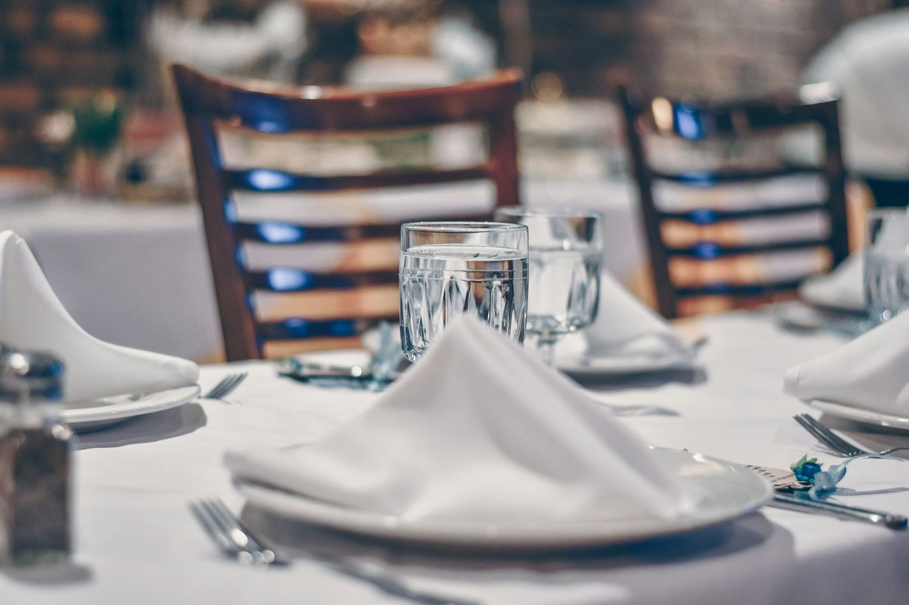

Photographies
La maison en images
La salle, la cuisine, la cave et les assiettes. Cliquez sur une photographie pour l'agrandir.

Photographies
La salle, la cuisine, la cave et les assiettes. Cliquez sur une photographie pour l'agrandir.